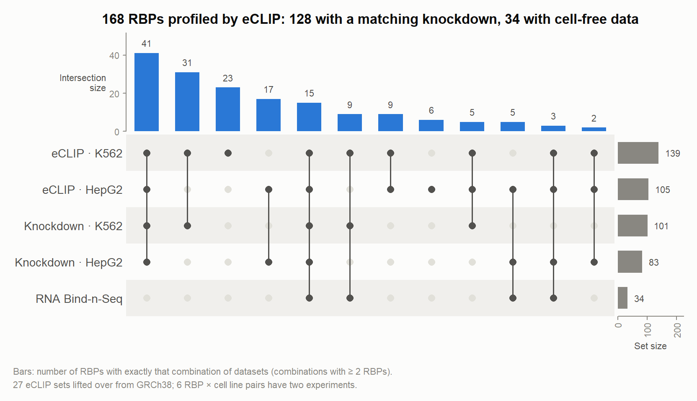
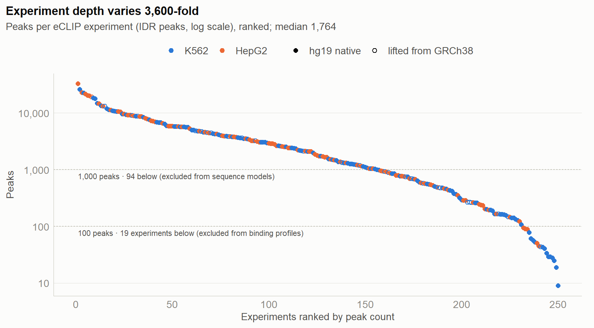
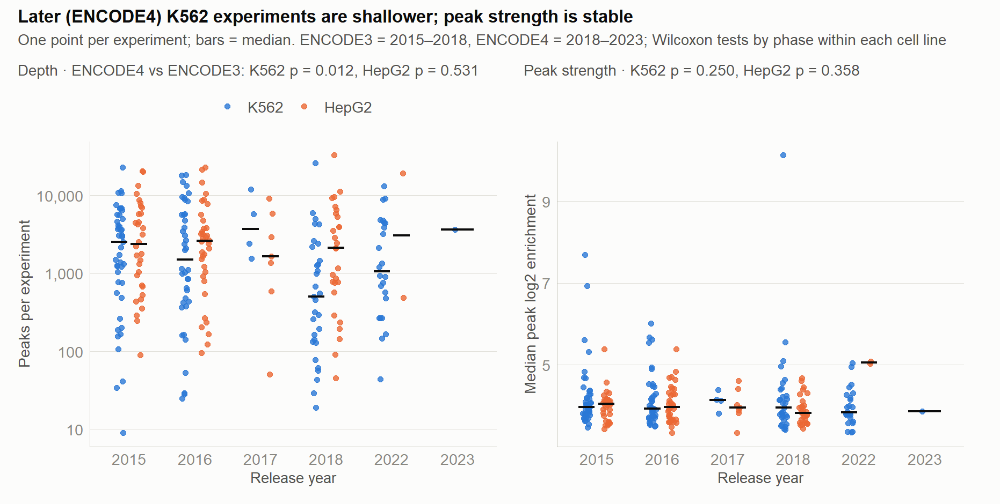
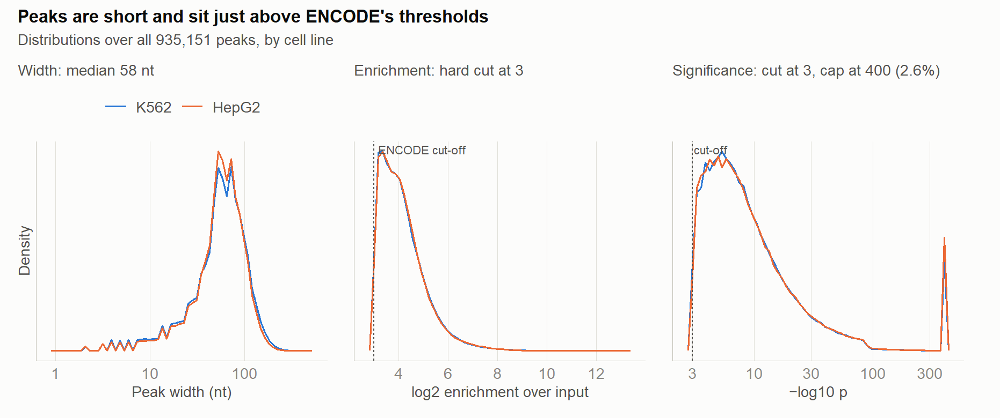
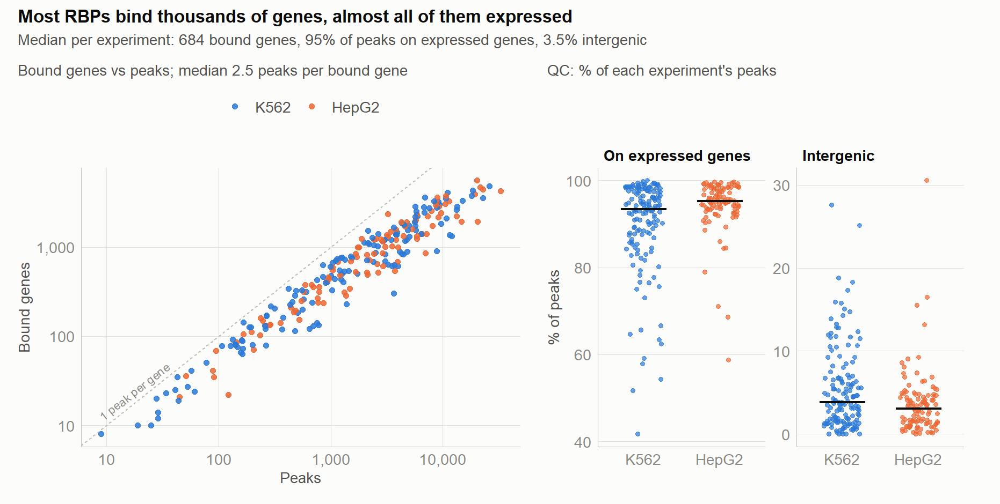
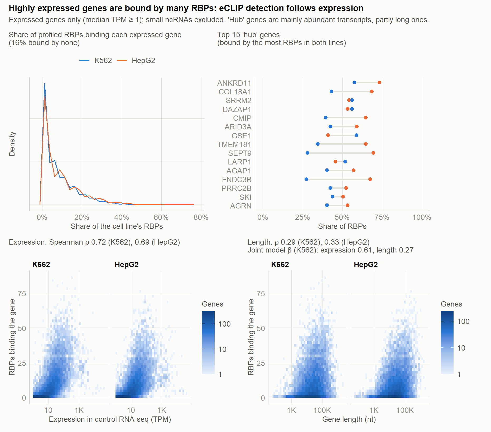

The data
What was profiled, how deep the experiments are, and what the peaks look like
eCLIP (enhanced crosslinking and immunoprecipitation) involves first linking proteins to the RNA they interact with inside living cells, then purifying an RBP along with the bound RNA. Sequencing the RNA allows researchers to identify where the binding sites of the RBP were in the cell.
Each experiment yields a set of reproducible binding sites (“peaks”) for one RBP. All data come from one lab (Yeo lab at UCSD) and was downloaded from the ENCODE Project repository.
What was profiled?

Extended legend
UpSet plot of data availability per RBP.
- Rows: five datasets.
- eCLIP in K562 (139 RBPs) and in HepG2 (105);
- shRNA knockdown RNA-seq in K562 (101) and in HepG2 (83);
- RNA Bind-n-Seq, a cell-free binding assay (34).
- Bars: the number of RBPs with exactly the combination of datasets marked by the connected dots below. Combinations held by a single RBP are not shown. Right-hand bars give each dataset’s total.
- Knockdowns: only shRNA knockdowns with hg19 / GENCODE V19 gene quantifications and exactly one matched control are counted. CRISPRi knockdowns are excluded.
- eCLIP data: 250 replicate-merged IDR peak files.
- 27 experiments were available only on GRCh38 and were lifted over to hg19.
- 6 RBP × cell line pairs have two independent experiments.
Script: analysis/R/05_dataset_overview_figures.R; data: analysis/results/tables/rbp_availability.tsv.
How deep is each experiment?

Extended legend
- Points: each point is one eCLIP experiment (n = 250), coloured by cell line. Open circles are experiments lifted over from GRCh38.
- Peaks: reproducible (IDR) peaks as released by ENCODE. ENCODE’s thresholds are log2 enrichment over size-matched input ≥ 3 and −log10 p ≥ 3; only canonical chromosomes are kept.
- Range: 9 to 32,718 peaks per experiment (median 1,764). The y-axis is log-scaled.
- Exclusions: 19 experiments fall below 100 peaks and are excluded from binding profiles; 94 fall below 1,000 and are excluded from sequence models.
Script: analysis/R/05_dataset_overview_figures.R; data: analysis/results/tables/dataset_overview.tsv.

Extended legend
- Points: each point is one experiment, placed by its ENCODE release year. ENCODE3 experiments were released 2015–2018 (K562 n = 90, HepG2 n = 78); ENCODE4 experiments 2018–2023 (K562 n = 55, HepG2 n = 27).
- Left: peaks per experiment (log scale).
- Right: median log2 enrichment of each experiment’s peaks.
- Bars: medians per year and cell line.
- Tests: ENCODE3 vs ENCODE4, two-sided Wilcoxon rank-sum test within each cell line.
- Depth: K562 p = 0.012 (median 2,132 vs 755 peaks); HepG2 p = 0.531.
- Peak strength: K562 p = 0.250; HepG2 p = 0.357.
- Batch: all experiments come from the same lab, so release phase is the main batch variable.
Script: analysis/R/05_dataset_overview_figures.R; data: analysis/results/tables/batch_tests.tsv.
What do the peaks look like?

Extended legend
- Data: all 935,151 peaks from 250 experiments. Curves are density-scaled frequency polygons (60 bins) for each cell line.
- Left: peak width in nucleotides (log scale).
- Middle: log2 enrichment of the immunoprecipitation over size-matched input; the dashed line is ENCODE’s cut-off of 3.
- Right: −log10 p (log scale); the dashed line is the cut-off of 3. ENCODE caps −log10 p at 400, which produces the spike at the right.
- Summits: the peak files have no summit positions, so analyses place each peak at its midpoint.
Script: analysis/R/05_dataset_overview_figures.R.

Extended legend
- Points: each point is one experiment (n = 250).
- Bound gene: a gene with at least one peak. Each peak is assigned to one gene and region by its midpoint, using the region priority CDS > 3′UTR > 5′UTR > small ncRNA > noncoding exon > proximal intron > distal intron; ties between genes go to the more highly expressed gene.
- Left: the dashed line marks one peak per gene. Median 684 bound genes and 2.5 peaks per bound gene. Both axes are log-scaled.
- Right: share of each experiment’s peaks on expressed genes (median 95%) and in intergenic sequence (median 3.5%). Bars mark medians.
- Expressed = median TPM ≥ 1 across that cell line’s control RNA-seq samples. Small ncRNAs, which standard RNA-seq can’t measure, always count as expressed.
Script: analysis/R/05_dataset_overview_figures.R; data: analysis/results/tables/dataset_overview.tsv.
Do many RBPs bind the same genes?

Extended legend
- Genes: annotated, expressed genes (median control TPM ≥ 1; small ncRNAs excluded): K562 n = 11,815, HepG2 n = 12,517.
- Bound: a gene counts as bound by an RBP if any of that RBP’s experiments in the cell line has a peak in it. All 250 experiments are used; K562 has 139 RBPs and HepG2 105.
- Top left: distribution of the share of RBPs binding each gene (density, bins of 2.5%). 16% of genes are bound by none.
- Top right: the 15 genes with the highest mean share across the two lines, among genes expressed in both.
- Bottom: 2-D histograms of RBPs per gene against control expression (TPM) and gene length (first to last annotated base). Colour = number of genes (log scale).
- Statistics: Spearman ρ with expression ≈ 0.70 (mean of the two lines). In a joint linear model of standardised RBP count on log TPM and log length, expression has about twice the weight of length.
Script: analysis/R/05_dataset_overview_figures.R; data: analysis/results/tables/gene_rbp_counts.tsv.
Key takeaways
- A matched, multi-assay dataset. 168 RBPs were profiled by eCLIP in two cell lines. 128 also have a knockdown in the same cell line and 34 have cell-free binding data, so binding can be linked to function and to intrinsic sequence preference.
- Depth is the main technical variable. Experiments range from 9 to 32,718 peaks. Later (ENCODE4) K562 experiments are shallower (median 755 vs 2,132 peaks, p = 0.012), while peak strength does not differ by phase. Minimum-depth filters remove 19 experiments from binding profiles and 94 from sequence models.
- Peaks are short and modestly enriched. Most peaks are tens of nucleotides wide and sit just above ENCODE’s cut-offs, so binding is called at moderate enrichment.
- eCLIP detection follows expression. Almost all peaks fall on expressed genes, and the number of RBPs binding a gene tracks its expression (ρ ≈ 0.70) much more than its length. “Hub” genes are mainly abundant transcripts, so comparisons between bound and unbound genes need expression matching.